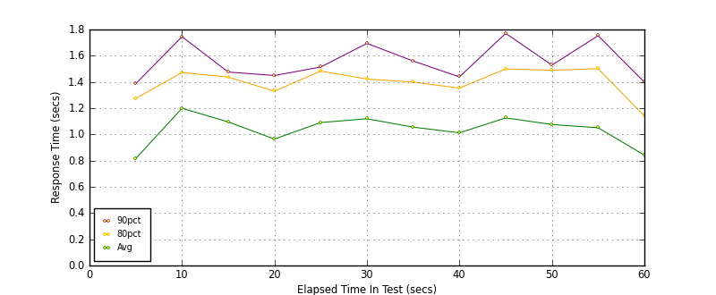
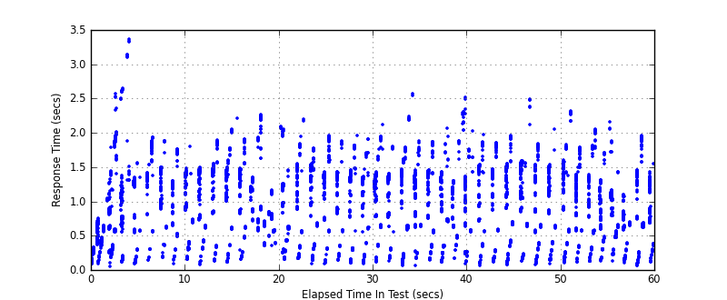
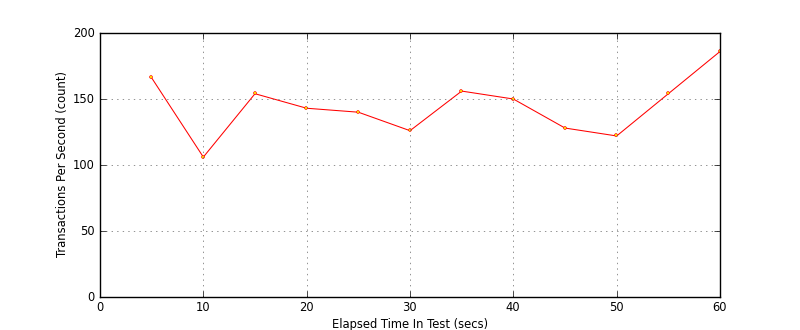

Performance Results Report
Summary
transactions: 8829
errors: 0
run time: 60 secs
rampup: 0 secs
test start: 2017-05-25 11:16:34
test finish: 2017-05-25 11:17:34
time-series interval: 5 secs
workload configuration:
| group name | threads | script name |
|---|
| user_group-10 | 10 | redis_stress.py |
| user_group-11 | 10 | redis_stress.py |
| user_group-12 | 10 | redis_stress.py |
| user_group-13 | 10 | redis_stress.py |
| user_group-14 | 10 | redis_stress.py |
| user_group-15 | 10 | redis_stress.py |
| user_group-2 | 10 | redis_stress.py |
| user_group-3 | 10 | redis_stress.py |
| user_group-1 | 10 | redis_stress.py |
| user_group-6 | 10 | redis_stress.py |
| user_group-7 | 10 | redis_stress.py |
| user_group-4 | 10 | redis_stress.py |
| user_group-5 | 10 | redis_stress.py |
| user_group-8 | 10 | redis_stress.py |
| user_group-9 | 10 | redis_stress.py |
All Transactions
Transaction Response Summary (secs)
| count | min | avg | 80pct | 90pct | 95pct | max | stdev |
|---|
| 8829 | 0.051 | 1.024 | 1.428 | 1.573 | 1.814 | 3.357 | 0.501 |
Interval Details (secs)
| interval | count | rate | min | avg | 80pct | 90pct | 95pct | max | stdev |
|---|
| 1 | 834 | 166.80 | 0.051 | 0.816 | 1.274 | 1.387 | 1.964 | 3.357 | 0.601 |
| 2 | 532 | 106.40 | 0.091 | 1.199 | 1.472 | 1.745 | 1.840 | 1.936 | 0.437 |
| 3 | 774 | 154.80 | 0.073 | 1.095 | 1.437 | 1.476 | 1.772 | 2.045 | 0.467 |
| 4 | 716 | 143.20 | 0.149 | 0.964 | 1.330 | 1.449 | 1.887 | 2.259 | 0.422 |
| 5 | 704 | 140.80 | 0.083 | 1.091 | 1.483 | 1.514 | 1.752 | 2.195 | 0.485 |
| 6 | 631 | 126.20 | 0.083 | 1.119 | 1.422 | 1.694 | 1.842 | 1.960 | 0.487 |
| 7 | 780 | 156.00 | 0.060 | 1.055 | 1.399 | 1.560 | 1.764 | 2.570 | 0.470 |
| 8 | 753 | 150.60 | 0.081 | 1.012 | 1.353 | 1.439 | 1.840 | 2.515 | 0.495 |
| 9 | 642 | 128.40 | 0.065 | 1.126 | 1.499 | 1.771 | 1.821 | 2.019 | 0.526 |
| 10 | 611 | 122.20 | 0.078 | 1.075 | 1.489 | 1.529 | 1.643 | 2.492 | 0.496 |
| 11 | 770 | 154.00 | 0.099 | 1.050 | 1.501 | 1.753 | 1.795 | 2.312 | 0.522 |
| 12 | 930 | 186.00 | 0.057 | 0.842 | 1.140 | 1.398 | 1.723 | 2.157 | 0.422 |
Graphs
Response Time: 5 sec time-series

Response Time: raw data (all points)

Throughput: 5 sec time-series
